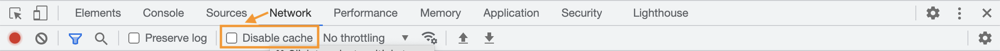
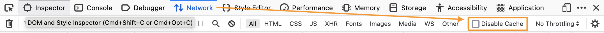
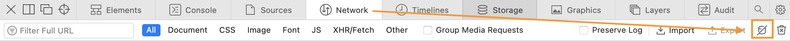

JavaScript
Lektion 3
Grundlagen: Funktionen II, Klassen, Modulen
Rückblick
- Grundlagen:
- Variablen:
var,letundconst - Typen
- Zeichenketten
- Operatoren
- Verzweigungen
- Schleifen
- Funktionen
- Variablen:
Übersicht Lektionen
- Einführung & IDE Aufsetzen
- Grundlagen: Typen, Operatoren, Statements, Funktionen I
- Grundlagen: Funktionen II, Klassen, Modulen
- Externe Abfrage: JSON & Fetch; Refactoring
- DOM & Ereignisse
- Formulare, Eingaben & Validierung
- Browser-Objekte, Persistenz, Animationen, Media
- LK1; Web Komponenten, JSX & React
- MLZ Präsentationen; React, Builders & TypeScript
Grundlagen
- Variablen:
var,letundconst - Typen, Zeichenketten
- Operatoren
- Statements: Verzweigungen, Schleifen
- Funktionen I: Grundlagen, Methoden, Math, Daten
- Funktionen II: Arrays, Strings, Generators, Rekursion
- Klassen
- Modulen
Funktionen
Array-Methoden (mutating)
Die folgende Methoden ändern das Array.
push()Element am Ende hinzufügenpop()Element am Ende entfernenunshift()Element am Anfang hinzufügenshift()Element am Anfang entfernensplice()Element im Array hinzufügen oder löschensort()Elemente sortierenreverse()Reihenfolge der Elemente umkehren
Array-Methoden (immutable)
Die folgende Methoden ändern das Array nicht.
slice()Erzeugt ein neues Array aus bestimmten Elementen des erstenconcat()Arrays verbindenjoin()Erzeugt einen String aus allen Elementenflat()Erstellt rekursiv ein neues Array mit allen Elementen von Unterarraysincludes()Prüft, ob ein Array ein bestimmtes Element enthältindexOf()Gibt den Index zurück, an dem ein bestimmtes Element im Array
Array-Methoden (immutable)
Die folgende Methoden ändern das Array nicht.
find()Gibt den Wert, welches als erstes die Bedingung einer Funktion erfülltmap()Wendet auf jedes Element des Arrays eine Funktion an und gibt das Ergebnis in einem neuen Array zurück.reduce()Ähnlich zumap(), aber mit Akkumulatorfilter()Erstellt ein neues Array mit allen Elementen, die den von einer Funktion implementierten Bedingung bestehen.
Array-Methoden (immutable)
Die folgende Methoden ändern das Array nicht.
find()Gibt den Wert, welches als erstes die Bedingung einer Funktion erfülltmap()Wendet auf jedes Element des Arrays eine Funktion an und gibt das Ergebnis in einem neuen Array zurück.reduce()Ähnlich zumap(), aber mit Akkumulatorfilter()Erstellt ein neues Array mit allen Elementen, die den von einer Funktion implementierten Bedingung bestehen.
Funktionen
- Array-Funktionen Testen

Fragen?

Übungen
- Test mit Array Methoden schreiben

String: Suchen
substr() |
Extrahiert von Position bis Länge |
substring(),
slice()
|
Extrahiert zwischen zwei Positionen |
includes() |
true falls ein Sub-String vorkommt |
indexOf(), lastIndexOf() |
Position des ersten oder letzten Vorkommens eines Sub-Strings |
startsWith(),
endsWith()
|
true falls ein String mit einem anderen beginnt oder endet |
Strings: Transformieren
toLowerCase(),
toLocaleLowerCase()
|
Wandeln ein String in Kleinbuchstaben um |
toUpperCase(),
toLocaleUpperCase()
|
Wandeln ein String in Grossbuchstaben um |
trim(),
trimStart(),
trimEnd()
|
Entfernt Whitespace von einem String |
split()
|
Liefert ein Array von Sub-Strings |
Strings: Matching
Suchen und ersetzen mit Regulären Ausdrücken.
match(),
matchAll()
|
Findet Sub-Strings, die zu einem regulären Ausdruck passen |
replace(),
replaceAll()
|
Ersetzt ein SubString oder Regulären Ausdruck mit einem anderen String |
"Zeichen"
- JavaScript unterstützt Unicode, aber...Funktionen wie
substr()eher nicht - Bei Emojis besteht ein Grapheme aus mehreren Code Points
grapheme-splitternpm package kann helfen
Für weitere Infos, siehe:
Strings: Unicode
function* getLetters() {
yield "a";
yield "b";
}
const letters = getLetters();
const a = letters.next(); // { done: false, value: "a" }
const b = letters.next(); // { done: false, value: "b" }
const c = letters.next(); // { done: true, value: undefined }
String-Funktionen
match()/matchAll()Testenreplace()/replaceAll()Testen- UPPER/lower-case Testen
trim()/split()Testen
Fragen?
Übungen
- Test mit
split()undtrim()schreiben - Test mit
replace()oderreplaceAll()schreiben
Fortgeschrittene Funktionen
Generator Funktionen
- Beschreibt ein Algorithmus, welches eine Sequenz definiert
function* getLetters() {
yield "a";
yield "b";
}
const letters = getLetters();
const a = letters.next(); // { done: false, value: "a" }
const b = letters.next(); // { done: false, value: "b" }
const c = letters.next(); // { done: true, value: undefined }
Generatoren: Iterieren
- Können iteriert werden
- Können zu Arrays konvertiert werden
function* getLetters() {
yield "a";
yield "b";
}
for (const letter of getLetters()) {
// Work with each letter
}
const letterArray = [...getLetters()];
Rekursion
- Ein rekursive Algorithmus besteht aus einer Funktion, die sich sich selbst aufruft (oder mehrere Funktionen, die sich gegenseitig aufrufen).
- Diese Funktionen ermöglichen das effiziente Abbilden offenen Algorithmen (z.B. Fibonacci).
- ⚠️ Ein rekursives Programm ohne Abbruchbedingung läuft theoretisch unendlich.
Rekursion: Fibonacci
Die Sequenz fängt so an:
0, 1, 1, 2, 3, 5, 8, 13, 21, ...
Der Algorithmus kann rekursiv geschrieben werden:
const getFibonacci = n => {
if (n === 0 || n === 1) {
return n;
}
return getFibonacci(n - 1) + getFibonacci(n - 2);
};
Fortgeschrittene Funktionen
- Generators Testen
- Rekursive Funktionen Testen
Fragen?
Übungen
- Test mit einem Generator schreiben
- Eine rekursive Funktion schreiben
Struktur
Klassen
- Definieren eine Vorlage für Objekt-Definitionen
- Können, wie Objekte, Methoden und Variablen beinhalten
- Können auch Konstruktoren definieren, um die Initialisierung eines Objekts zu übersteuern
- Können, wie Funktionen, deklariert oder als Ausdrücke definiert werden
Klassen: Deklarieren
class Person {
firstName = "John";
lastName = "Doe";
constructor(firstName, lastName) {
this.firstName = firstName;
this.lastName = lastName;
}
fullName() {
return `${this.firstName} ${this.lastName}`
}
}
Klassen: Erstellen
const p1 = new Person("Bob");
// p1.fullName() == "Bob Doe"
const p2 = new Person("Bob", "Smith");
// p2.fullName() == "Bob Smith"
Klassen: Vererbung
Klassen können von einander vererben.
class Teacher extends Person {
schoolName = "unknown";
constructor(firstName, lastName, schoolName) {
super(firstName, lastName);
this.schoolName = schoolName;
}
fullName() {
return `${super.fullName()} @ ${this.schoolName}`
}
}
const p3 = new Teacher("Bob", "Smith", "HFU");
// p3.fullName() == "Bob Smith @ HFU"
Klassen: Private
Eigenschaften/Methoden mit #-Präfix sind privat.
class Teacher2 extends Teacher {
#homeAddress = "unknown";
#getFullNameWithHomeAddress() {
return `${this.fullName()} (${this.homeAddress})`;
}
}
const p4 = new Teacher2("Bob", "Smith", "HFU");
const x = p4.homeAddress; // Error
const y = p4.getFullNameWithHomeAddress(); // Error
Klassen
- Klasse Testen
- Vererbung Testen
Fragen?
Übungen
- Test mit Konstruktoren mit default Parametern
- Test mit Vererbungen
Modulen: CommonJS
- Default System für Node
- Browsers verstehen es nicht
- Exportieren mit
exportsodermodule.exports - Importieren mit
require()
Modulen: ES6/JavaScript
Konvertieren nach ES6
library.jssollexportbenutzenlibrary.test.jssollimportbenutzen- Jest muss mit Babel ausgeführt werden
index.htmlmuss vonhttp://localhostgelesen werden- Click-handlers umschreiben (imports sind nicht global verfügbar)
Babel Installieren
- Im Terminal
npm install --save-dev babel-jest @babel/core @babel/node @babel/preset-envausführen - Datei
babel.config.jsmit folgendem Inhalt erstellen
module.exports = {
presets: [['@babel/preset-env', {targets: {node: 'current'}}]],
};
Syntax anpassen
- Ctrl + . auf
requireinlibrary.test.jsbetätigen, um nachimportzu konvertieren - Ctrl + . auf
module.exportsinlibrary.jsbetätigen, um nachexportzu konvertieren - Tests ausführen
Localhost benutzen
- http-server NPM package installieren
npx http-serverausführen- http://localhost:8080 im Browser öffnen
Siehe Using ES6 modules in the browser (2018) für weitere Infos.
Modulen: Click-Handlers
- Click-Handlers werden im Kontext vom
window-Objekt ausgeführt - Importierte Methoden sind nur lokal verfügbar und können nicht mehr direkt aufgerufen werden
windowObjekt muss angepasst werden- Wir sehen später, wie das Problem mit Event-Handlers gelöst werden kann
Click-Handlers anpassen
In index.html
In main.js
import * as library from './library.js';
window.add = () => {
library.show(library.increment())
};
window.subtract = () => {
library.show(library.decrement())
};
Browser Cache
- "Developer Tools" öffnen
- "Disable cache" ankreuzen, um sicherzustellen, dass Änderungen sofort geladen werden.
| Chrome |  |
|---|---|
| Firefox |  |
| Safari |  |
Modulen
- Nach ES6-Modulen konvertieren
Fragen?
Übungen
- Eigenes Projekt nach ES6-Modulen konvertieren
Tools ergänzen
Code Linting und Formatierung
Code Style & "Linting"
Linting Werkzeuge suchen nach und beheben semantischen Fehlern.
- Zugriff auf nicht initialisierte Variablen verhindern
- Nicht erreichbare Code hervorheben (z.B. nach einem
return) - Siehe ESLint Rules
Formatierung
Formatierungswerkzeuge helfen, eine einheitliche Code Style und Formatierung einzuhalten.
- Namenskonventionen einhalten
- Positionen von Klammern standardisieren
- Einrückung mit tabs/spaces
- Siehe Prettier Optionen
Prettier installieren
npm install --save-dev prettierausführen- Datei
/.prettierignoremit folgendem Inhalt erstellen
node_modules
package-lock.json
*.html
*.md
Prettier konfigurieren
- Datei
/.prettierrcmit folgendem Inhalt erstellen
{
"printWidth": 120,
"singleQuote": false,
"useTabs": false,
"tabWidth": 2,
"semi": true,
"bracketSpacing": true,
"trailingComma": "all"
}
Siehe Prettier Optionen für weitere Infos.
Prettier ausführen
npx prettier --write .- Die Änderungen in SmartGit anschauen.
- Einfacher geht's mit IDE-Integration
Prettier & WebStorm
- Einstellungen öffnen
- Nach Languages & Frameworks | JavaScript | Prettier navigieren
- Ankreuzen: On 'Reformat Code' action
- Ankreuzen: On save
Prettier & VSC
- Extension
prettier-vscodeinstallieren - Format auslösen; "Prettier Format" auswählen
- Einstellungen öffnen
- Nach "format on save" suchen
- Option ankreuzen
ESLint installieren
npm install --save-dev eslint eslint-config-prettierausführen
ESLint konfigurieren
- Konfigurationsdatei mittels
npx eslint --initerstellen - Oder Datei
/.eslintrc.jsonmit folgendem Inhalt erstellen
{
"env": {
"browser": true,
"commonjs": true,
"es2021": true
},
"extends": ["eslint:recommended", "prettier"],
"parserOptions": {
"ecmaVersion": 2021
},
"rules": {}
}
ESLint & VSC
- ESLint Extension installieren.
- Fehler sollten in
.jsDateien sofort ersichtlich sein. - Siehe ESLint Rules für weitere Einstellungen.
ESLint & WebStorm
- Einstellungen öffnen
- Zu Languages & Frameworks | JavaScript | Code Quality Tools | ESLint navigieren
- Automatic ESLint configuration auswählen
Tools
- Prettier & ESLint einrichten
Fragen?
Übungen
- Prettier einrichten
- ESLint einrichten